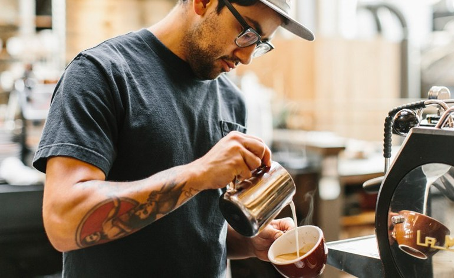

Baristas generally operate a commercial espresso machine,
and their role is preparing and pulling the shot; the degree
to which this is automated or done manually varies significantly,
ranging from push-button operation to an involved manual process.
Espresso is a notoriously finicky beverage, and good manual espresso
making is considered a skilled task. Further, preparation of other
beverages, particularly milk-based drinks such as cappuccinos and lattes,
but also non-espresso coffee such as drip or press pot, requires
additional work and skill for effective frothing, pouring and most
often latte art.